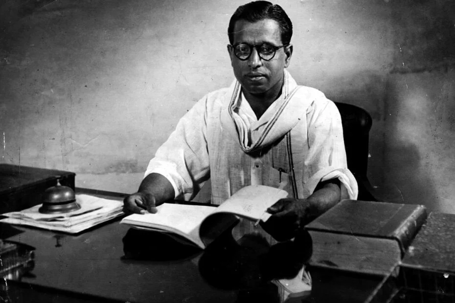

Kalki Krishnamurthy
முனைவர் கல்கி கிருஷ்ணமூர்த்தி, தமிழ்நாட்டின் புகழ்பெற்ற எழுத்தாளர், பத்திரிகையாளர் மற்றும் வரலாற்று நாவலாசிரியர் ஆவார். அவர் தனது காலத்தில் எழுதிய நாவல்கள், சிறுகதைகள் மற்றும் கட்டுரைகளால் தமிழ் இலக்கியத்தில் உலாவும் பெயரை பெற்றார்.
கல்கி இரா. கிருஷ்ணமூர்த்தி
கல்கி கிருஷ்ணமூர்த்தி பற்றிய விவரங்கள்
வாழ்க்கை
கல்கி கிருஷ்ணமூர்த்தி எனப்படும் இரா. கிருஷ்ணமூர்த்தி 9 செப்டம்பர் 1899 அன்று பிறந்தார். அவர் தனது
எழுத்தாளர் வாழ்க்கையில் "கல்கி" எனும் புனைபெயரை பயன்படுத்தினார்.
எழுத்து வேலைகள்
கல்கி கிருஷ்ணமூர்த்தியின் புகழ்பெற்ற நாவல்கள்:
சிறுகதைகள்
அவர் எழுதித்தார் சுபத்திரையின் சகோதரன் போன்ற பல சிறுகதைகள், இது மக்களின் கவனத்தை ஈர்க்கும் கதை தன்னகத்தே
பல்வேறு தத்துவங்களையும் கொண்டுள்ளது.
பத்திரிகை உலகில்
கல்கி பத்திரிகை "கல்கி"யின் நிறுவனர் மற்றும் ஆசிரியர் ஆவார். இதன் மூலமாக அவர் பல சமூகச் சீர்திருத்தங்களை
முன்னேற்றினார்.
கல்கி கிருஷ்ணமூர்த்தி அவர்களின் பங்களிப்பு தமிழ் இலக்கியத்தில் மிகுந்த அங்கீகாரம் பெற்றது.
இதைப் பற்றி அறியவும்பிற சாதனைகள்
கல்கி கிருஷ்ணமூர்த்தியின் புகழ்பெற்ற நாவல்கள்:
கல்கி கிருஷ்ணமூர்த்தியின் கவிதைகள்
அவரது கவிதைகள் பொதுவாக சமூக, மனிதநேயம் மற்றும் தேசியம் ஆகியவற்றை மையமாகக் கொண்டு எழுதப்பட்டவை.
இவ்வாறு, கல்கி கிருஷ்ணமூர்த்தியின் வாழ்க்கை மற்றும் படைப்புகளைத் தமிழில் தழுவி எழுதுவது உங்கள்
வலைப்பூவிற்கு மிகச் சிறந்தது.